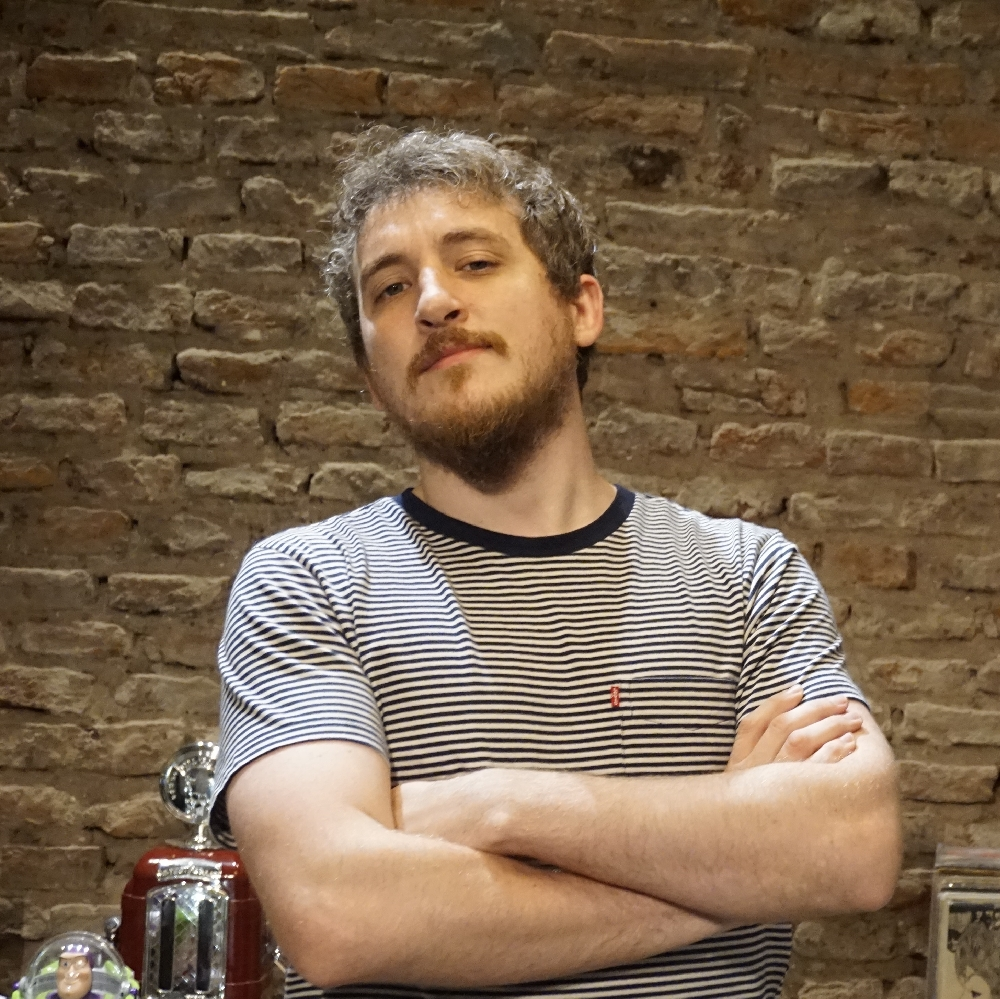
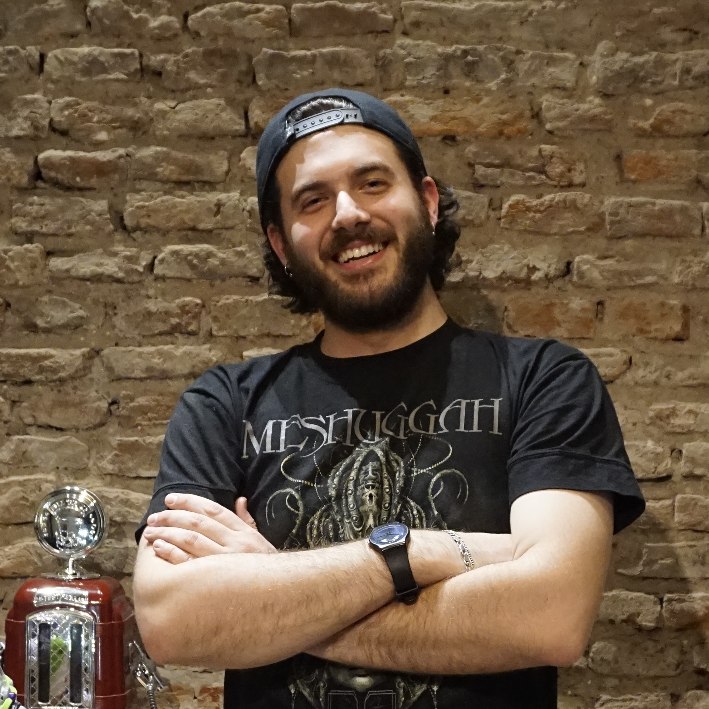
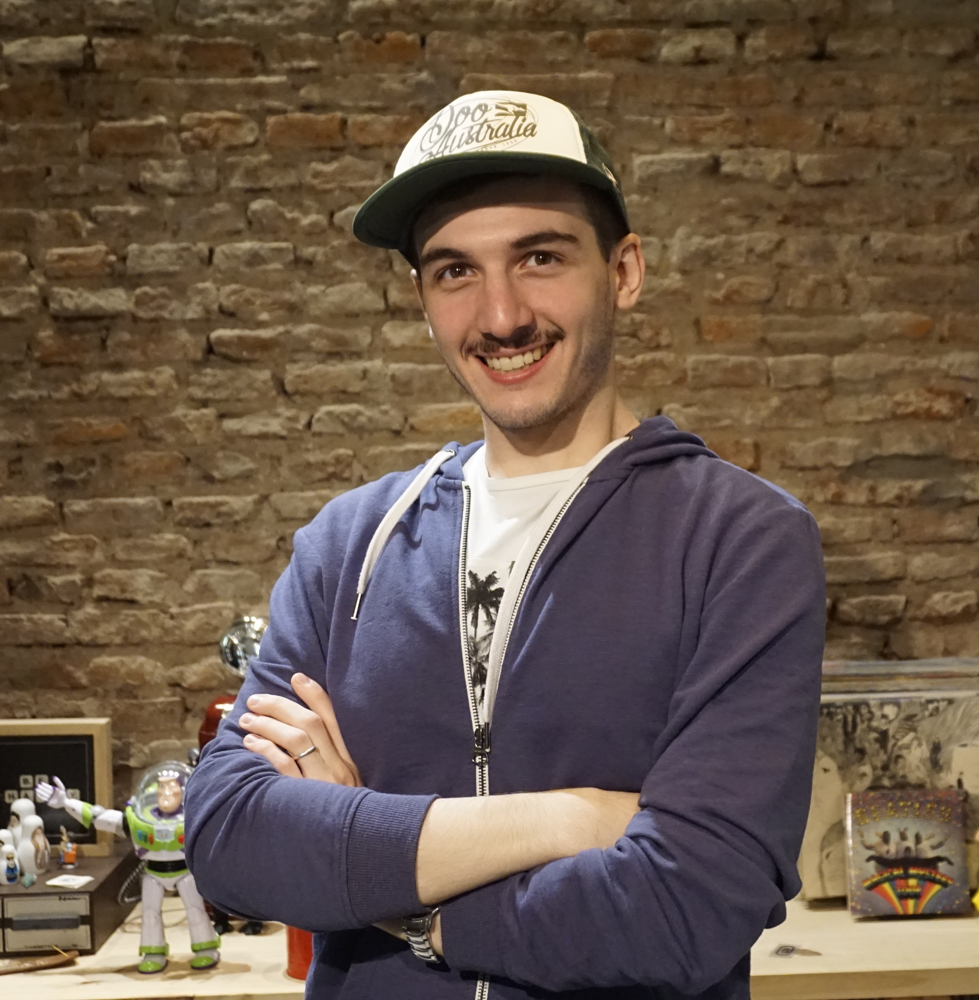
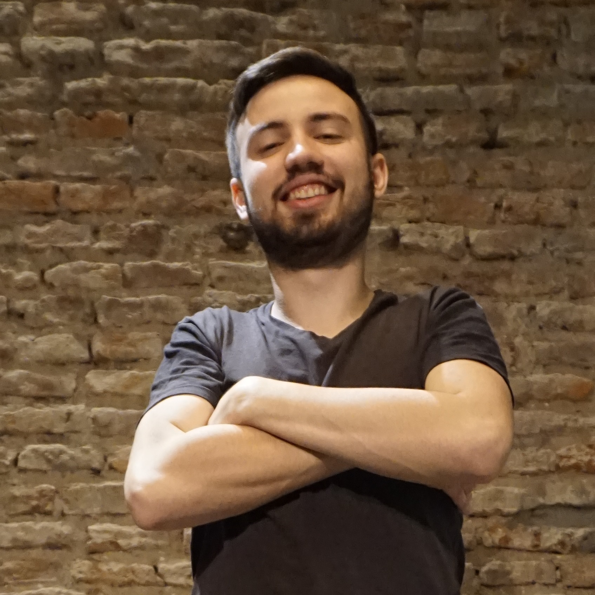
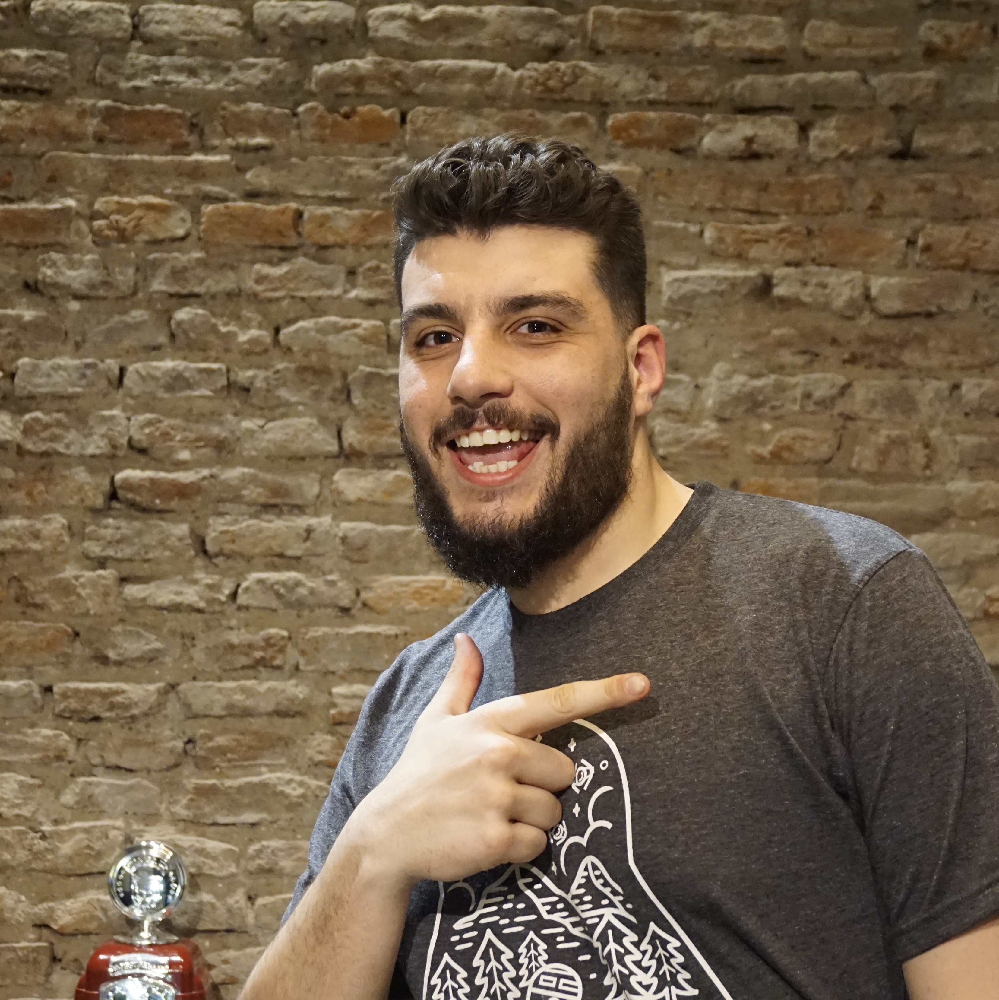
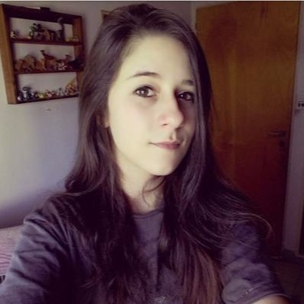

Nuestra misión es contarle al mundo
qué significa ser un individuo de sistemas.
¿Cómo piensan? ¿Cómo interactúan con el mundo? ¿Cómo ve la sociedad a éstos seres tan especiales?
Para lograrlo, buscamos a los personajes menos capacitados para tal fin; un grupo de amigos que trabajan
y estudian en el rubro, ellos son la
Crew de Café con Java.
A través de sus experiencias y basto conocimiento en el área, nos cuentan cada detalle sobre este maravilloso
mundo.
En este
podcast. No hablamos de
caféni tampoco hablamos de
Java (bueno un poco quizás si).
Acompañanos en este viaje de conocimiento y diversión.
La presigiosa Crew de Café Con Java
No son los mejores, tampoco fueron nuestra primera opción, pero le ponen un montón de garra
-
El Dudu, Oriundo del barrio de Liniers.
Productor de radio veterano, encontró en el mundo podcasteril un mundo de oportunidades.
"Las tortillas DEBEN ser babé."Federico Rusconi
-
Lucho, Caballito lo vió nacer, y hasta ahora no lo vió hacer otra cosa bien.
Quería ser músico pero le dió para bajista.
"No es por presumir, pero puedo comer un alfajor en dos bocados."Luciano Pueyo
-
Bernie Pau, nacido en el barrio de San Isidro.
Vivió muchos años al lado del konex, forjando en él un fuerte sentir por la música indie.
"La intransigencia del ser no es más que la sempiterna idea de revolución alocada en el ánima."Bernie Pau
-
El Cris, criado en la Paternal,
Es de River pero su amor es el beach handball.
"No importa de donde seas, tengo una anécdota ahí".Cristian Breitman
-
Mati Dash, nacido en Liniers.
Le gusta la fotografía y las Raves, que son como fiestas electrónicas, pero no tanto.
"En mis ratos libres organizo peleas callejeras entre escarabajos. O podría ser cangrejos, no se que es más gracioso."Mati Aristimuño
-
La Mecha, nacida en Paraná.
Su pokemón favorito es Charizard. Se sabe que el mejor es Gyarados, pero bueno.
"Si tuviera que elegir entre seguir haciendo Café con Java o comer reboque, ya estaría yendo a buscar el fratacho."Mechi Valle
-
Gracias
Cultural Bombingpor todo el groove que le dan a Café con Java
- Gracias Radio en Casa por grabarnos y darnos brebajes los domingos por la noche